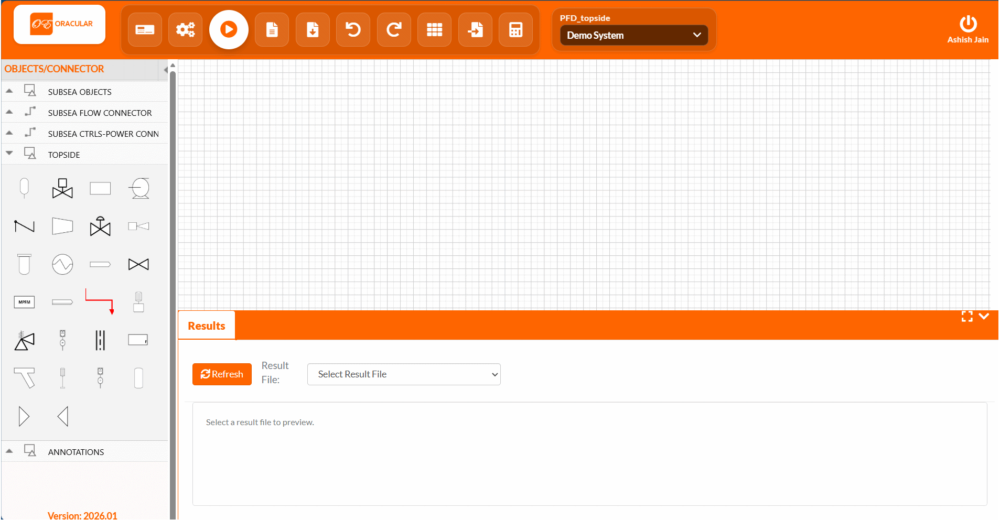
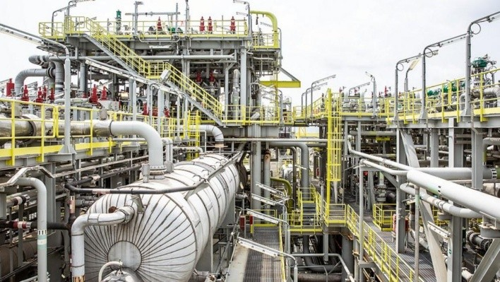
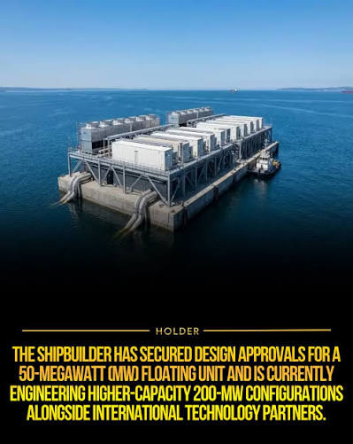
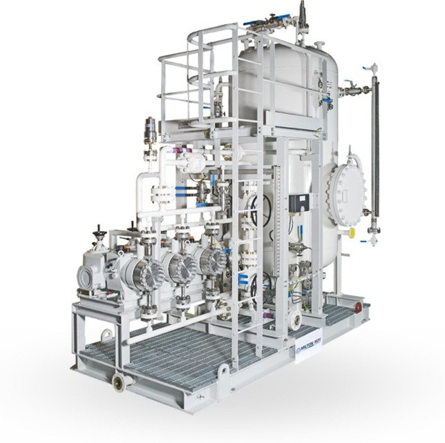
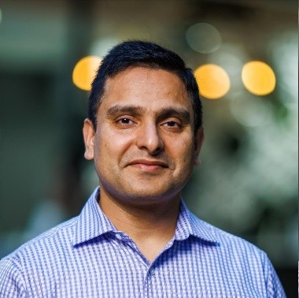

Manual engineering
Repeated calculations using ad-hoc tools and handoffs add work and may create inconsistencies across deliverables.
Unify your process - simulate, engineer, deliver and optimize complete systems in one connected environment.

Oracular brings process definition, simulation and engineering calculations together in one intuitive environment. Model complete systems, evaluate multiple cases and generate the engineering outputs needed to move projects forward to procurement & construction, then operation - saving cost and time.
Separate tools for making flowsheets, running process simulations and performing process engineering create handoffs, manual effort and disconnected outputs - causing sub-optimal project execution, increased cost and longer timelines.
Repeated calculations using ad-hoc tools and handoffs add work and may create inconsistencies across deliverables.
Separate applications make it difficult to maintain a connected path from process definition to engineering to operations monitoring & optimization.
Specialised tools and ad-hoc calculation methods can increase the cost and complexity of engineering delivery.
Oracular is designed to bring all the steps - from making flowsheets, process simulation and process engineering to operational monitoring - into one continuous workflow using a single tool, providing optimised results in a cost-effective manner. Oracular is developed on fundamental physics and engineering principles garnered from years of domain expertise.
Move from defining the process and handovers to analysing performance, preparing engineering outputs and optimising operation within a connected environment.
Simulate complete systems in one run using compositional fluids, seawater and proprietary fluid models.
Build process flow diagrams and block diagrams in an intuitive environment designed to progress from concept definition to detailed simulation and engineering.
Analysis can run in both design and rating mode, with multi-case evaluation in the same flowsheet and automatic identification of governing cases for equipment design.
Generate design reports, datasheets, calculation notes and relevant equipment-sizing outputs from the process model.
Bring process models and engineering calculations closer together, helping teams work with greater consistency from early definition through detailed evaluation.
Lower software costs through a cost-effective approach of combined process simulation and engineering software.
Reduced engineering man-hours through integrated calculations and automated deliverables.
Faster evaluation of alternatives and operating cases through multi-case analysis within the same flowsheet and reusable process models.
Better consistency by eliminating ad-hoc calculation tools and manual handoffs.
Oracular provides building blocks to model any process system - offshore, onshore or subsea - across industries. Designed where network solution coupled with thermodynamics enable engineering design and operational optimisation.



Oracular is a product of SFACE, a technology company founded by senior process and system engineers with decades of experience from the world leading oilfield services, offshore & subsea equipment suppliers, and petroleum production operating companies. Our core technology builds on almost 10 years of development - first producing SFACE, a subsea-focused product, and then Oracular for a wide array of industries.
Our aim is to democratise process engineering by empowering teams to deliver safe, pre-validated system designs effortlessly - removing the traditional barriers of deep technical complexity and manual validation.
Almost 20 years experience in Process and Systems Engineering with Aker BP, Aibel, Baker Hughes, GE Oil & Gas and Bilfinger Tebodin. Strong track record across process engineering, system engineering, flow assurance, early phase studies and product development & qualification.

Subsea engineer with over 16 years in subsea systems and products engineering from Aker Solutions, GE Oil & Gas, Xodus and OneSubsea/Schlumberger. Experience spanning sales and early phase studies through to EPCI.
Members with long experience developing advanced mathematical models and associated scientific code.
Developers with vast experience in web development, cloud technology & security, UI design, database management and API development.
Tell us about your project and we will show you how Oracular can unify your process workflow.